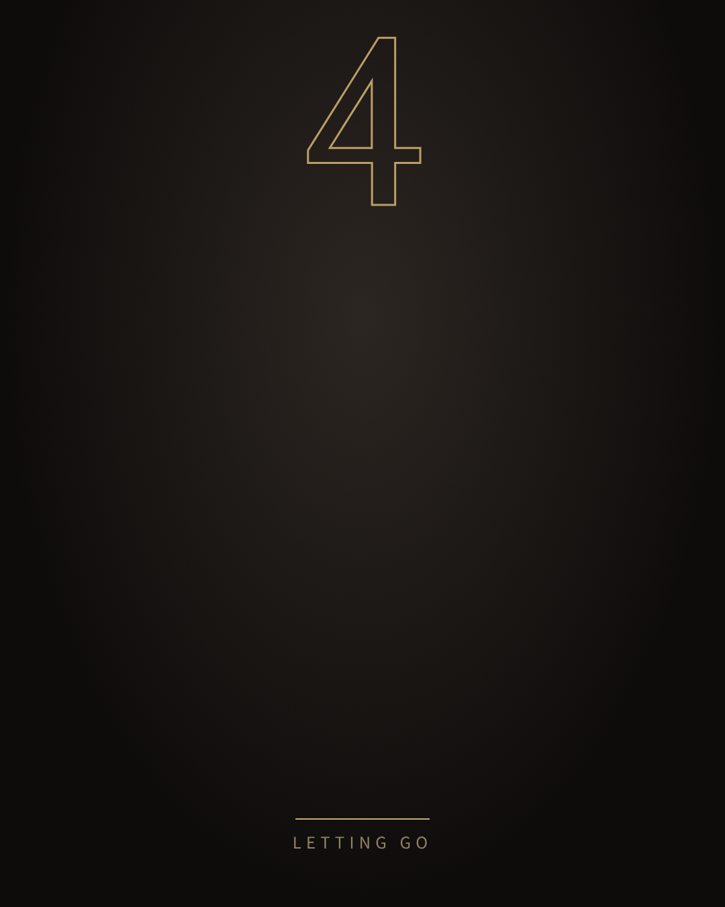
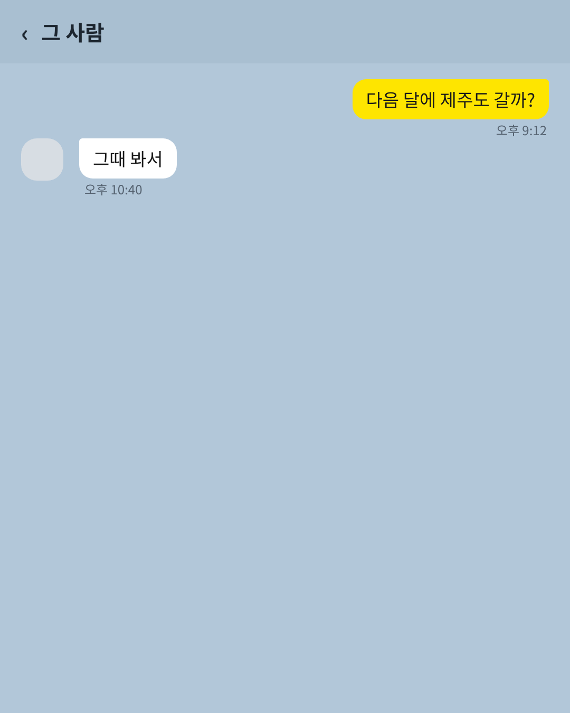
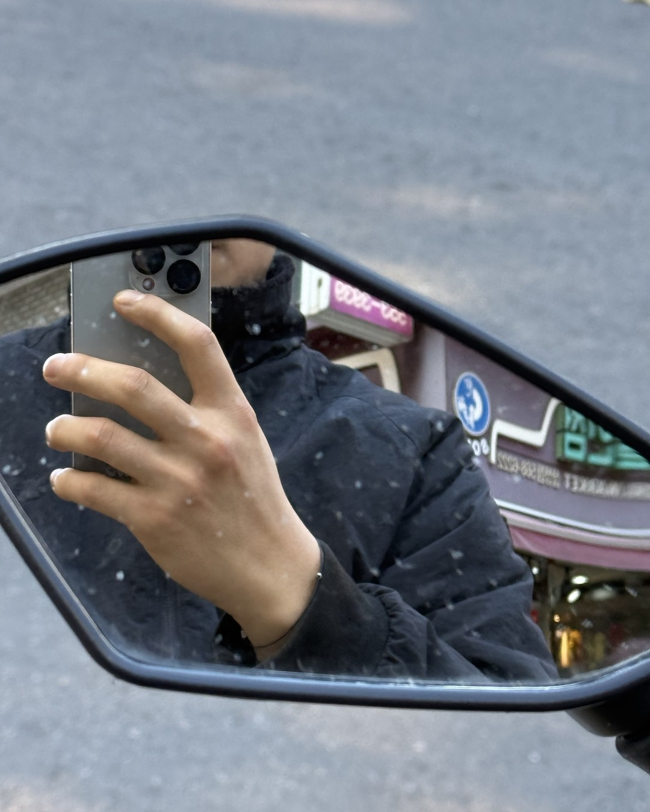
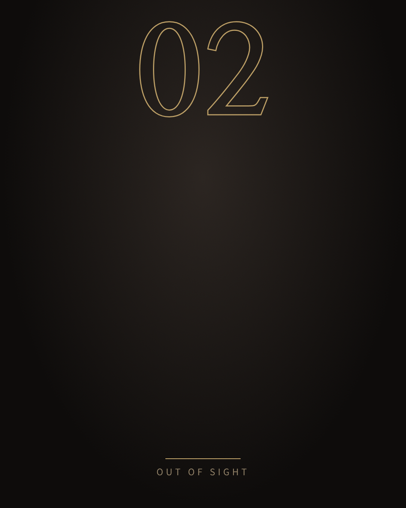
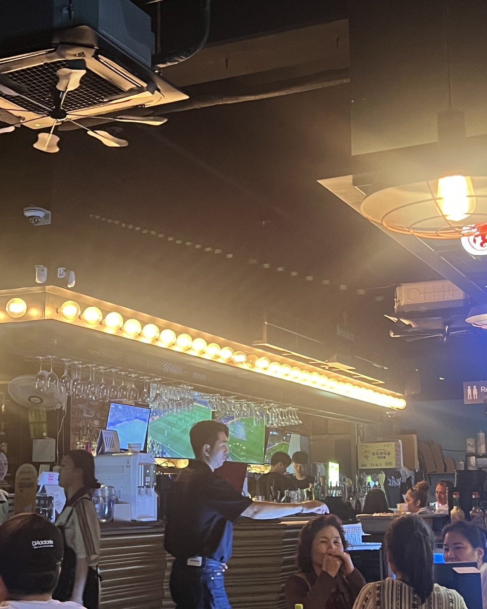
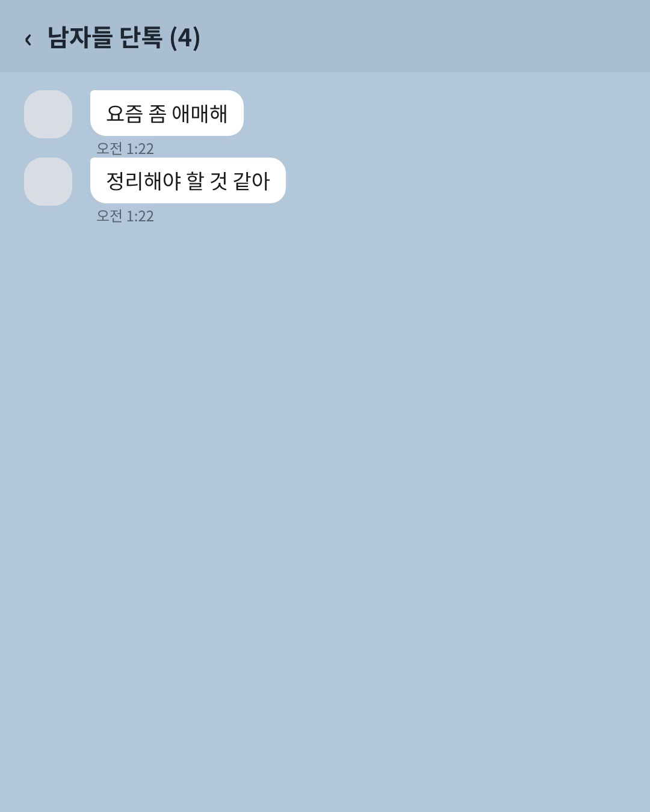
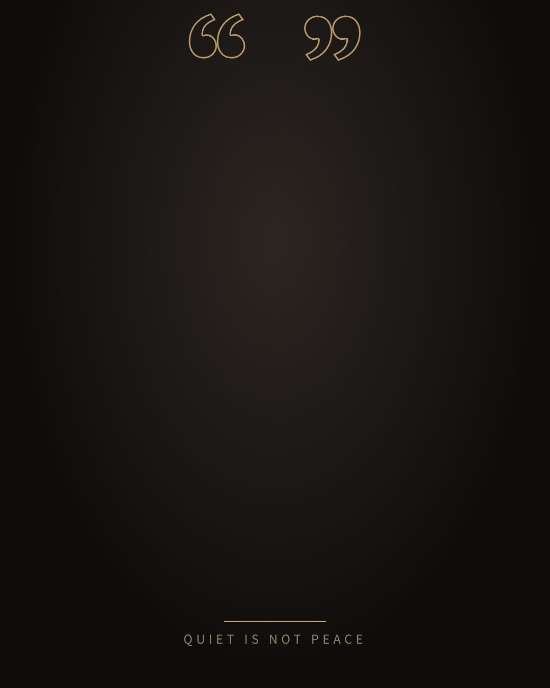
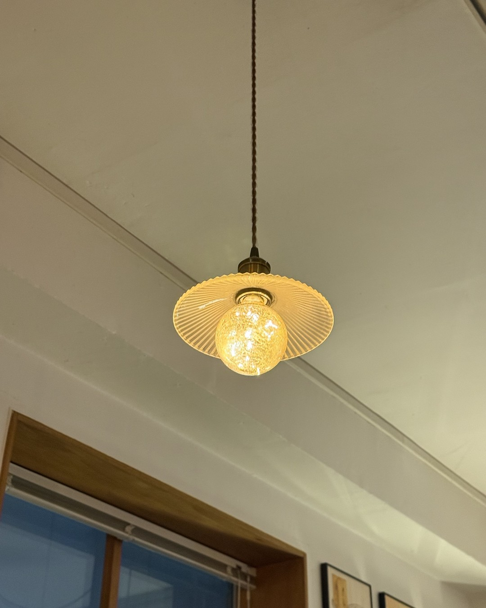
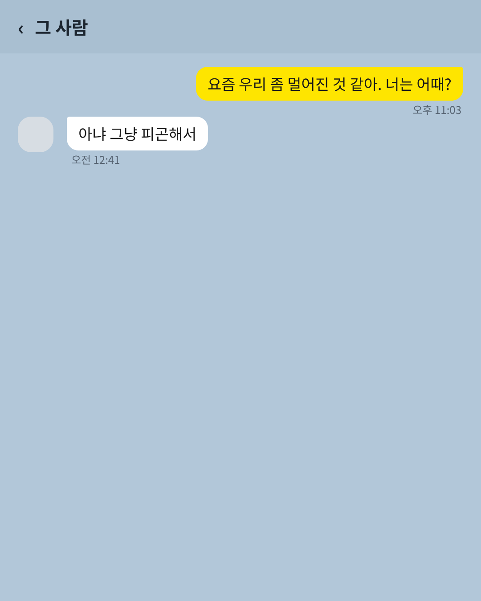
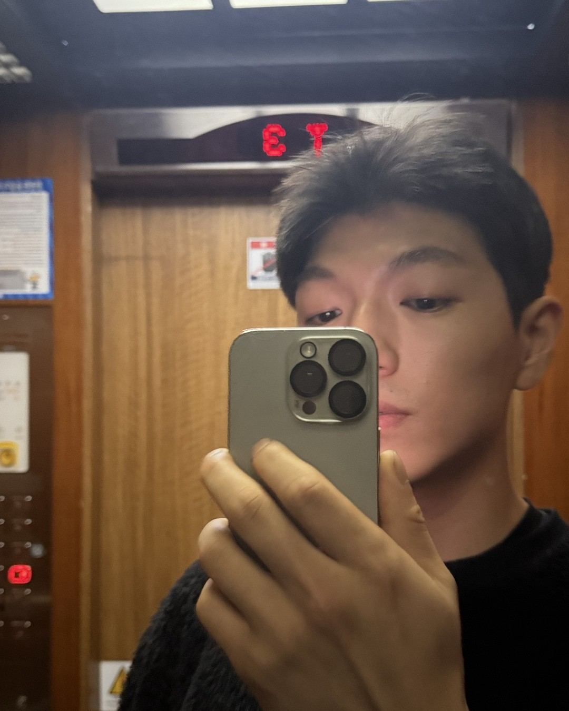

남자가 헤어질 결심을 하면,
가장 먼저 정리하는 것 4
(이별 통보보다 먼저 보여요.)
1/14
@mszexc
넘겨보세요 →

남자는 헤어지자는 말보다
정리를 먼저 시작해요.
(말은 마지막이고, 정리는 몇 주 전부터예요.)
2/14
@mszexc
남자들끼리 하는 말 #71
첫 번째.
둘이 함께할 "다음 계획"
(여행 · 기념일 얘기를 슬쩍 피해요.)
3/14
@mszexc
남자들끼리 하는 말 #71

"다음 달에 갈까?" 하면
"그때 봐서."
(미루는 게 아니라, 그때 같이 있을지 모르는 거예요.)
4/14
@mszexc
남자들끼리 하는 말 #71

두 번째.
휴대폰 속 둘의 흔적
(배경화면 · 프사 · 고정한 대화방부터 바뀌어요.)
5/14
@mszexc
남자들끼리 하는 말 #71

사진을 지우진 않아요.
눈에 안 띄는 곳으로 옮길 뿐이에요.
(티 나게 지우면 싸움이 될 걸 알거든요.)
6/14
@mszexc
남자들끼리 하는 말 #71

세 번째.
친구들 앞에서 하는 말
(당신 얘기를 할 때 "우리"가 사라져요.)
7/14
@mszexc
남자들끼리 하는 말 #71

남자들끼리는 이렇게 말해요.
"요즘 좀 애매해. 정리해야 할 것 같아."
(친구에게 먼저 말하고, 당신에게는 마지막에 말해요.)
8/14
@mszexc
남자들끼리 하는 말 #71
네 번째.
싸울 이유 그 자체
(서운한 걸 말하지 않아요. 고칠 생각이 없으니까요.)
9/14
@mszexc
남자들끼리 하는 말 #71

싸움이 줄었다고 좋아하기 전에
대화가 같이 줄었는지 보세요.
(조용해진 게 평화가 아닐 수도 있어요.)
10/14
@mszexc
남자들끼리 하는 말 #71

네 개 중 두 개 이상이라면
"요즘 우리 좀 멀어진 것 같아. 너는 어때?"
(따지지 말고, 그의 대답을 먼저 들어요.)
11/14
@mszexc
남자들끼리 하는 말 #71

대답이 짧거나 피한다면
마음속 정리가 꽤 진행된 거예요.
(그땐 붙잡기보다, 내 마음부터 챙기세요.)
12/14
@mszexc
남자들끼리 하는 말 #71
헤어지자는 말은 마지막이고
정리는 그보다 훨씬 먼저 와요.
13/14
@mszexc
남자들끼리 하는 말 #71

이것만 기억하세요.
남자의 이별은 말보다, 정리에서 먼저 보여요.
남자가 하는 말의 뜻은 전자책 1·2권에 · 프로필 링크에서 무료로 받아보세요
14/14
@mszexc
남자들끼리 하는 말 #71